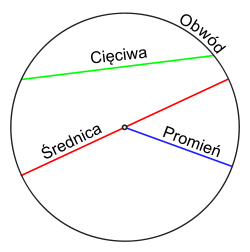

Aby obliczyć pole i obwód koła kliknij poniższy przycisk następnie wprowadź długość średnicy (jeżeli nie wiesz co to średnica poniżej zamieszczam obrazek koła z narysowaną średnicą)
Oblicz pole i obwód koła
